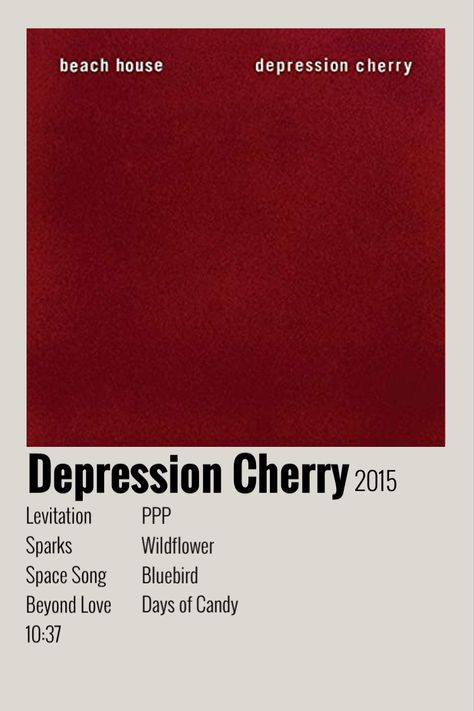

Depression Cherry is the fifth studio album by the American dream pop duo Beach House. It was co-produced by the group and Chris Coady, and was released on August 28, 2015, by Sub Pop in the US, Bella Union in Europe, Mistletone Records in Australia, Hostess Entertainment in Japan and Arts & Crafts in Mexico. The album was recorded at Studio in the Country in Bogalusa, Louisiana, from November 2014 to January 2015. Reacting to their dissatisfaction with using live drums on tour to play songs from their previous album, Bloom released in 2012, for Depression Cherry, the band returned to simpler song arrangements, similar to those of its first two studio albums. "Sparks" was released as the lead single on July 1. The album received mostly positive reviews from critics. Less than two months after releasing Depression Cherry, Beach House followed it up with their sixth album, Thank Your Lucky Stars. My three personal favorites in this album are; PPP, Wildflower, and Days of Candy.
Back 